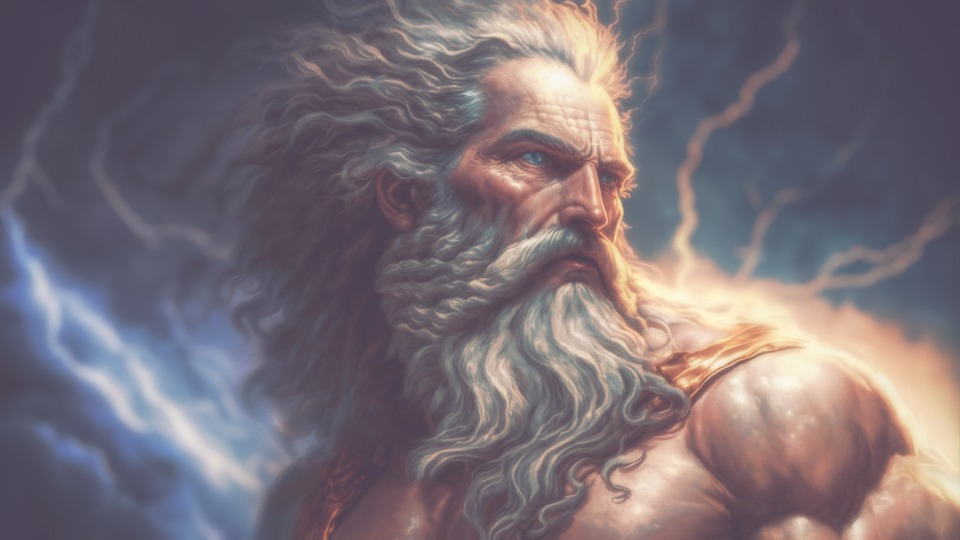

Zeus
Voto: 10
Zeus è il dio greco del cielo e del tuono, nonché il capo degli dei dell'Olimpo.
Viene spesso rappresentato come un uomo maturo e barbuto, con un fulmine nella mano,
simbolo del suo potere e della sua capacità di scagliare fulmini. È noto per la sua grande
forza e per la sua personalità ambivalente: da un lato è venerato come un dio benevolo che protegge
gli uomini e concede loro la pioggia e il sole, dall'altro è noto per i suoi intrighi amorosi e le
sue punizioni severe contro coloro che osano sfidarlo. In ogni caso, Zeus è una figura importante della
mitologia greca e un personaggio di grande fascino e complessità.
Affascinante il potere del tuono
